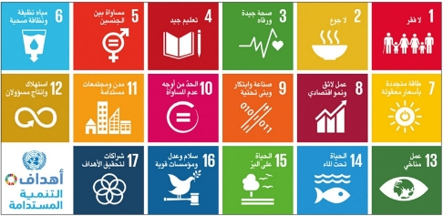

التنمية المستدامة
 أهداف التنمية المستدامة (SDGs)، والمعروفة رسميًا باسم تحويل عالمنا (جدول أعمال 2030 للتنمية المستدامة) وهي عبارة عن مجموعة من 17 هدفًا وُضعت من قِبل منظمة الأمم المتحدة، وقد ذُكرت هذه الاهداف
قرار الجمعية العامة للأمم المتحدة في 25 سبتمبر2015 وفي 1 يناير 2016،
أدرجت أهداف التنمية المستدامة ال 17 في خطة التنمية المستدامة لعام 2030.
تترابط هذه الأهداف العريضة فيما بينها
الرغم ان لكل منها أهداف صغيرة محددة خاصة به، تمثل في مجموعها 169 غاية
. وتغطي أهداف التنمية
المستدامة مجموعة واسعة من قضايا التنمية الاجتماعية والاقتصادية (الفقر – الجوع – الصحة – التعليم -
المناخ - المساواة بين الجنسين – المياه - الصرف الصحي – الطاقة – البيئة - العدالة الاجتماعية).
اهداف التنمية المستدامة المتعلقة بالمشروع من ال 17 هدف
اولا القضاء على الفقر تحقق السله مصدر دخل وربح اضافي للمواطن
ثانيا الاداره النظيفه للمخلفات يحقق هذا الهدف الصحه الجيده والرفاهيه
ثالثا التعليم الجيد يستطيع الطالب من تحويل القمامه الى نقاط في حسابه الى دفع المصروفات الدراسيه واستكمال تعليمه
رابعا المساواه بين الجنسين كلا الجنسين مطالب بالمحافظه على بيئته والمساهمه الفعليه في كل مبادره بيئيه
خامسا العمل اللائق ونمو الاقتصاد تحقق المبادره عملا اضافيا للفرد ونمو الاقتصاد حيث تزيد من عائد عمليات اعاده التدوير الرسميه التي تصب في الدخل القومي
سادسا الصناعه والابتكار والهياكل الاساسيه مصانع اعاده التدوير التي تلجا الان الى استيراد القمامه بسبب مافيا القمامه من النباشين ستنتعش بتوفير مخلفات جاهزه محليه
سابعا مدن ومجتمعات محليه مستدامه
ثامنا العمل المناخي الحد من التلوث البيئي
الناجم من المخلفات بانواعها والمتسبب الرئيسي في التغيرات المناخيه
تاسعا عقد الشراكات
لتحقيق الاهداف ستعقد عده شراكات بين مصانع اعاده التدوير وشركه اداره
المخلفات الجاهزه للتدوير غير الشراكات مع الاجهزه الحكوميه لتحويل
النقاط الى مصروفات دراسيه او خدمات كهرباء ومياه وخلافه وكذلك شركات
مع الهايبر ماركت الكبير والصغير لاستبدال النقاط بكوبونات للشراء